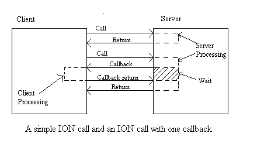

|
|
Interfaces Over the Net (ION)OverviewION is a technology for distributed processing over the net. ION is based on Java interfaces. The sever implements a particular Java interface and the client looks up the interface and uses it -- that's all there is to it! The server can also make callbacks to the client side via "callback interface"s.ION differs from earlier technologies such as RMI and EJB in its extreme simplicity, and in the ability to easily make callbacks to the client. Complementing the rather heavyweight technologies such as RMI and EJB, the lightweight ION helps make a complete spectrum of distributed processing technologies available for Java designers. ION technical details are given below. An easy step-by-step ION tutorial is also included. ION stepsThe first step is to define the interface that the server will provide, and that the client will look up. The interface can be any user defined interface, with the restriction that all argument and return types must either be primitive Java objects, or they must be serializable.Once the interface has been defined and compiled and is available in the client and server class paths, the further steps are:
For callbacks, a second interface is used. This interface is also registered at the web-server. But it is implemented by the client rather than by the server. When the client performs the lookup for the server-interface, the client also has the opportunity to specify the callback interface. Multiple threads may be used by looking up the server-instance in each thread. However, within each thread, all method calls are sequential. When the client calls the server, the client is blocked until the call completes. If the server makes callbacks, the original client call is still blocked, though the client thread executes again to service the callbacks. (Within the callbacks, the client is also allowed to make other server calls.) ION callbacks are never server initiated. The server can only make callbacks when it is in the middle of processing a client call. An example ION sessionAs a very simple example, an interface to have a factorial computed at a remote machine may look like this:package compute;
At the server side, an object is registered that can compute the factorial. When a client looks up the Factorial interface and makes method calls, this registered object will be given those method calls. ION ClientThe ION client needs to lookup an interface at a remote machine. This is done by calling the method "lookup" in the "Ion" class, with the remote host's name and the interface that is needed.A sample ION client program segment may look like import desisoft.dsap.*;
// ...
ion.close(); Here the client looks up an implementation of "compute.Factorial" interface at the remote host "www.myserverhost.com". Assuming a server class has been registered at www.myserverhost.com that implements this interface, the client will get an interface object. The client then uses this interface object to execute its methods. The methods will actually run at "www.myserverhost.com". When done, the client closes the connection by calling "close". The methods needed by ION at the client side are in the Ion class. For using ION over SSL, the Ion class is replaced by its derived class IonSsl. ION Server class implementationThe ION server class is a class that implements a given serve interface. A sample server implementation ispackage mypackage;
public class MyServer implements Factorial {
Registering the InterfacesAll interfaces used in ION need to be registered at the server. This includes both the server and any callback interfaces. To register an interface, run the tool "blxionreg" with the name of the given interface as the argument.blxionreg compute.Factor Every time an interface changes, it must be re-registered. Once an interface is registered at the server, it may be used either as a server interface or a callback interface. Registration is only for the server side, clients do not need to register anything. Configuring the Server ClassAn ION server class implements a server interface for access by clients. All server classes must be configured in the web initialization file, as shown in the following example:
ion.MyIonServer.className: mypackage.MyServer ion.MyIonServer.interface: compute.Factorial In addition, the server class may be configured with a callback interface. A callback interface may be "nullable", in which case the client can pass a null instead of a callback object (if the client is not interested in receiving callbacks.) If the server is configured to accept nullable callback interfaces, it must check to make sure the interface object is not null before it makes client callbacks. If the server is configured for callbacks, or if the server is interested in "connection start" and "connection closed" events, or if the server wants to be able to disconnect the call, the server also implements the optional interface "IonServer". This interface provides the server object with a callback interface object, and lets it know when the connection is started or closed. ION Callback processingDuring processing an ION call, the server can make a "callback" over a callback interface. At this point, the server processing stops, and the processing continues at the client side. The client side may simply return from the callback, or it may make other server calls before finally returning. The server side may make more than one callbacks. After all the callbacks have finally returned, the original client call finally returns. The image below shows a simple ION call, and an ION call with one simple callback. Other Requirements
|